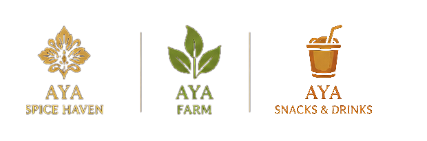
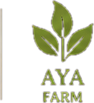
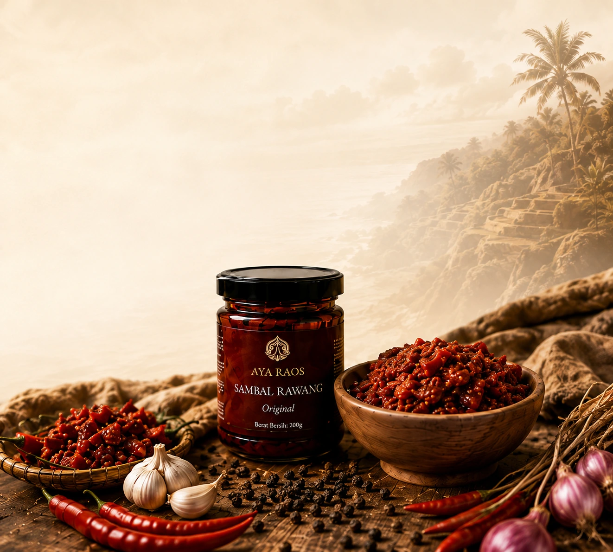
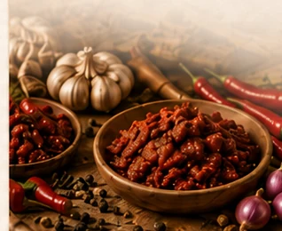

Rumah besar tiga lini AYA. Sebelum memilih produk, kenali dulu makna, fungsi, dan dunia yang menyatukan semuanya.
Rumah bagi AYA Spice Haven, AYA Farm, dan AYA Snacks & Drinks.

SATU NAMA · TIGA DUNIA
RASA
AYA RAOS adalah rumah besar bagi tiga lini yang saling melengkapi: yang tumbuh, yang diolah, dan yang dinikmati. Satu nama, satu karakter rasa, tiga dunia.
Tidak dibuat rumit.
Dekat dengan keseharian.
Makna dan fungsi yang terang.
Tumbuh. Diolah. Dinikmati.

Hasil pertanian, peternakan, dan produk primer untuk kebutuhan pangan sehari-hari.
Olahan AYA yang membangun rasa, memberi karakter, atau melengkapi sebuah hidangan.
Camilan, sajian ringan, frozen snack, dan minuman untuk dinikmati sehari-hari.
Pilih produk, atau dengarkan cerita rasa dari mereka yang sudah menikmati AYA.

Jelajahi produk AYA dari tiga lini untuk kebutuhan dapur dan momen sehari-hari.

Cerita nyata dari mereka yang telah menjadikan AYA bagian dari meja dan momen berharga.